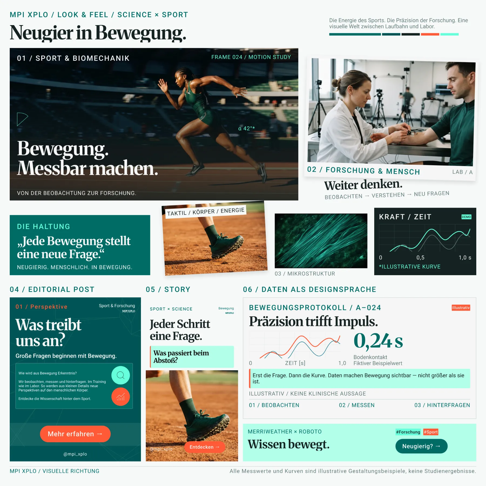
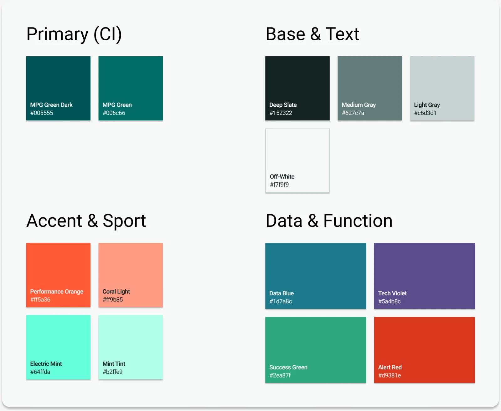
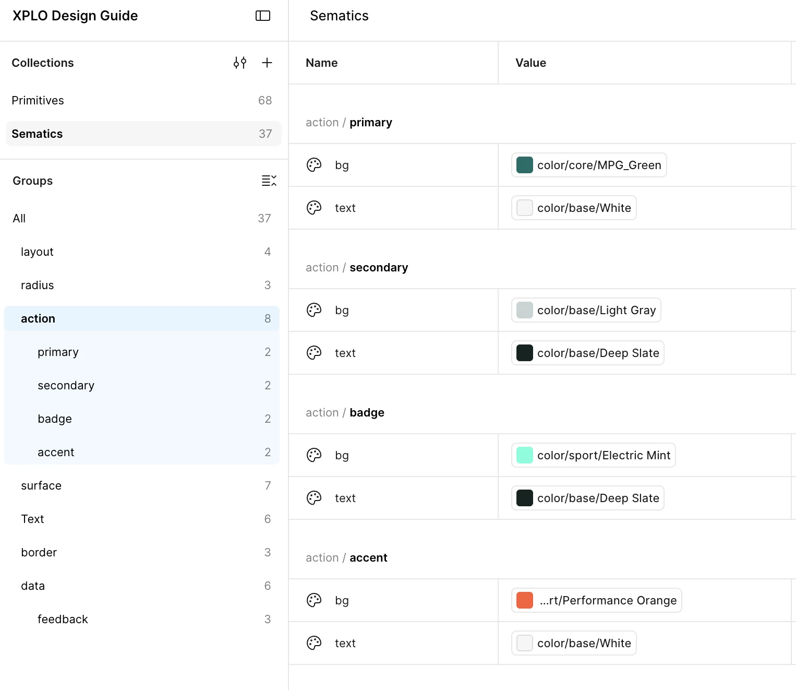
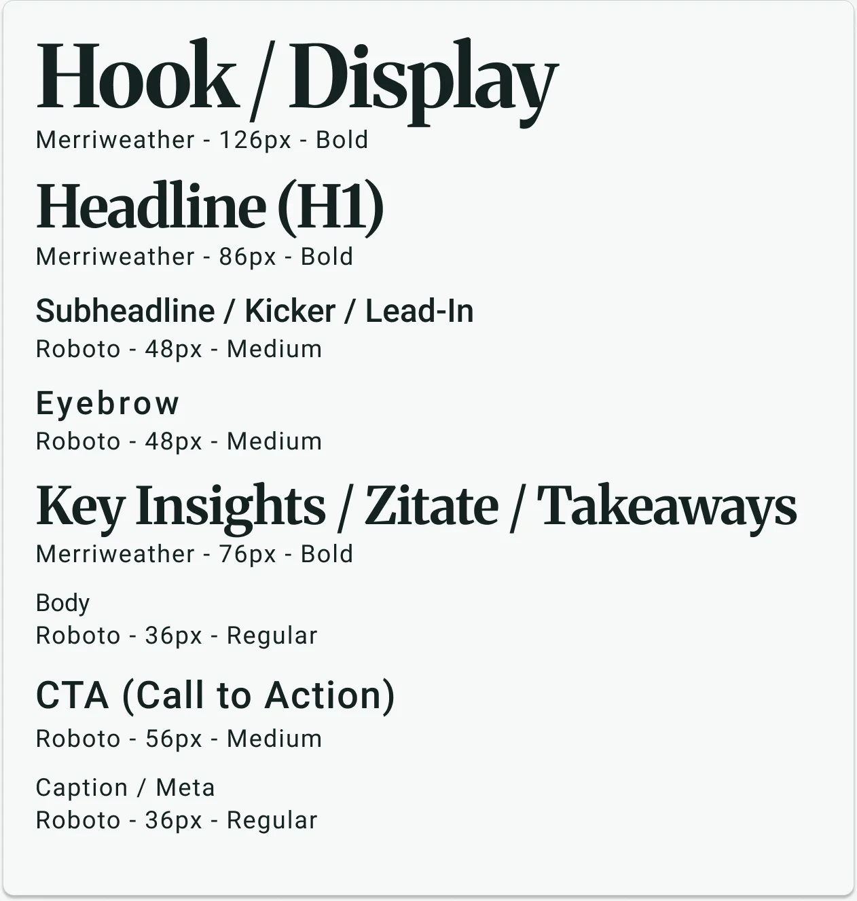
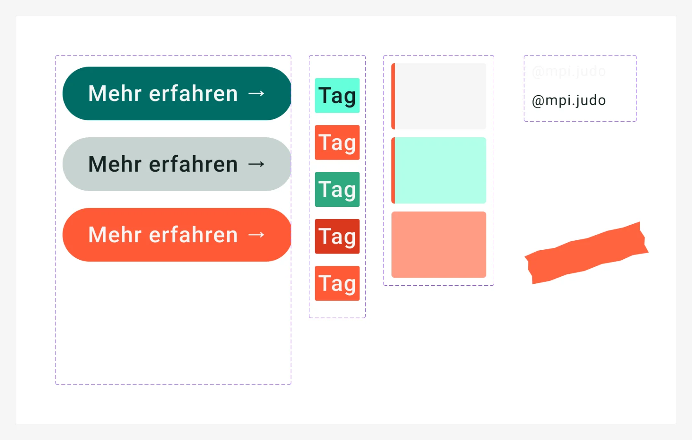

Smaller project · Max Planck Institute · 2026
A social media kit students can post with
The XPLO judo study's Instagram is run by student assistants. They change often and have no design background. I built a kit designed so an on-brand post takes under 30 minutes.
- Client
- Max Planck Institute, XPLO judo study
- Role
- Brand and visual design, end to end
- Channel
- Instagram @mpi.judo
- Tools
- Figma (variables, components and layouts), Gemini


Problem
Students posted without rules for a feed
The Max Planck CI covers print and web, but has no rules for a feed. Posts mixed styles, were heavy on text and showed neither the research nor the judo.
Constraint. Every decision had to fit into 30 minutes per post.
The decision
From a look of its own to the Max Planck CI as the base
The brief didn't ask for a link to Max Planck. But the study belongs to the Max Planck Society, so I wanted the channel to show it.
First we defined what the channel should express: science and sport, agile, informative. The moodboard turned that into a look. Then I built the color system around the CI green: orange and mint for the sport side, data blue and violet for the science side.


The kit
Wrote the rules into Figma








Result
Handed over, not tested yet
The kit is handed over to the team qualitative. No post has been built with it yet, so the 30-minute target is still untested.
Next step
Time the first posts built with the kit.
What I took away
What I learned
The kit has fewer tokens than a product UI. Most of the work went into usage rules, placed where someone picks a color.